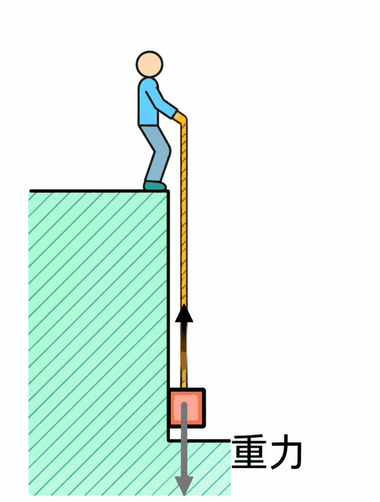
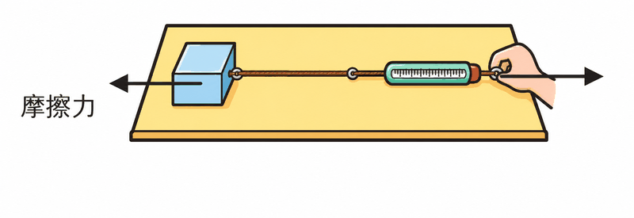
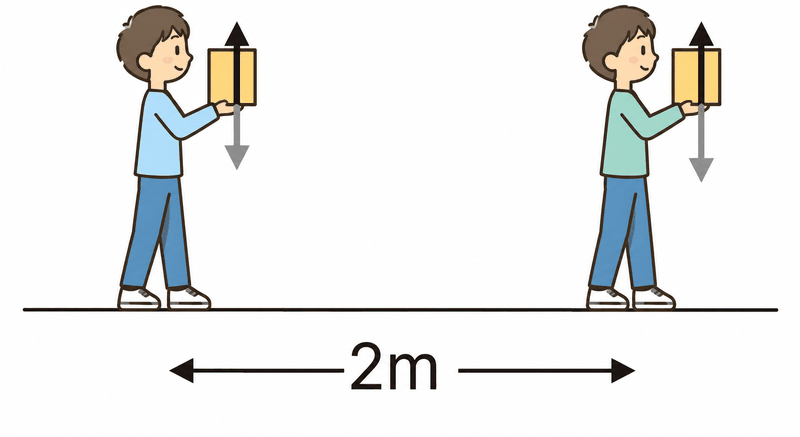
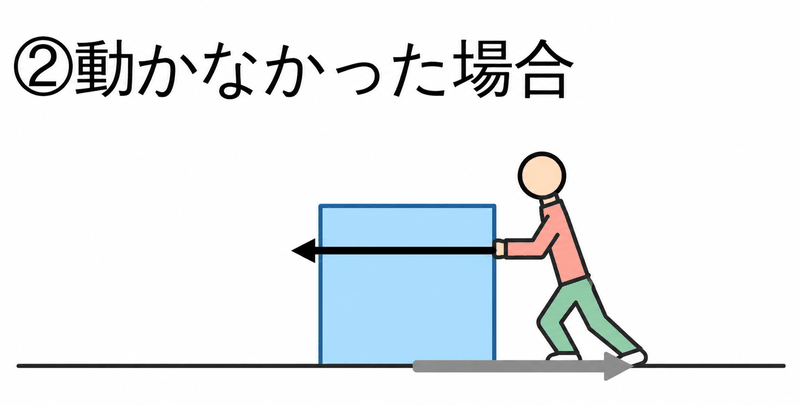
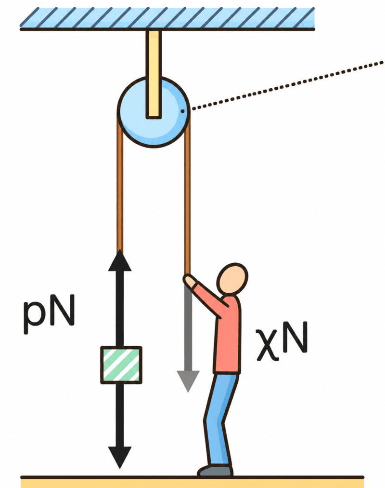
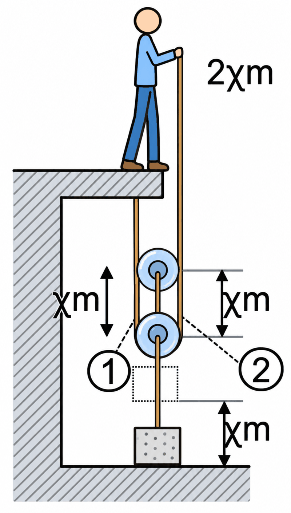
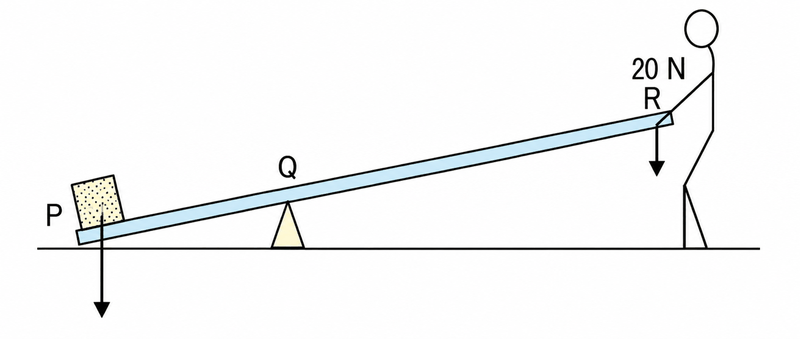
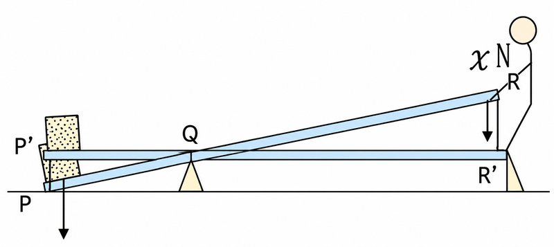

仕事とは（仕事の求め方）
ふだん「仕事」というと、会社で働くことを思い浮かべますよね。でも理科でいう仕事には、はっきりした決まりがあります。
物体に力を加えて、その力の向きに物体を動かしたとき、「仕事をした」といいます。仕事の大きさは、力の大きさと動かした距離をかけ算して求めます。
仕事の単位はJ(ジュール)です。1Nの力で物体を力の向きに1m動かしたときの仕事が、1Jです。
例で考えてみよう（図1・図2）

図1：人が1kgの物体を4mの高さまで引き上げます。理科では、100gの物体にはたらく重力を1Nと考えます。1kg＝1000gなので、1kgの物体にはたらく重力は10Nです。物体を引き上げるには10Nの力が必要なので、仕事は 10N×4m＝40J です。
図2：人が50Nの力で物体を2.0m引っ張りました。仕事は 50N×2.0m＝100J です。物体を一定の速さで引いているとき、引く力と摩擦力は同じ大きさなので、この物体にはたらく摩擦力は50Nです。
距離は必ず「m」にそろえて計算します。150cmのときは1.5mに直してから、力とかけ算しましょう。
仕事(J)＝力の大きさ(N)×力の向きに動いた距離(m)
単位は J(ジュール) ／ 1Nの力で1m動かすと1J
1kgの物体にはたらく重力＝10N（100gで1N）
距離はmにそろえる（150cm＝1.5m）
Q1. 文中の①〜⑤に当てはまる語句を語群から選んで入れよう。
仕事(J)＝①(N)×力の向きに動いた②(m)。仕事の単位は③(記号J)で、1Nの力で物体を④m動かしたときの仕事が1Jである。1kgの物体にはたらく重力は⑤Nである。
Q2. 仕事の単位として正しいものはどれか。
Q3. 20Nの力で物体を力の向きに4m動かした。このときの仕事は何Jか。
Q4. 60Nの力で物体を力の向きに150cm動かした。このときの仕事は何Jか。
Q5. 5kgの物体を2mの高さまで引き上げた。人がした仕事は何Jか。
仕事の種類と、仕事にならない場合
仕事には、次の2つの種類があります。
① 重力に対して行う仕事 … 物体を持ち上げるときの仕事です。
② 摩擦力に対して行う仕事 … 物体を床の上でひきずるときの仕事です。


仕事にならない場合（仕事が0Jになる）
① 物体を持って水平に移動したとき（例：2kgの物体を持って2m歩く）。手が物体にはたらかせる力は上向きですが、物体は水平に動いています。力の向きには動いていないので、仕事は0Jです。

② 力を加えても物体が動かなかったとき。100Nで物体を押しても動かなければ、動いた距離は0mなので、100N×0m＝0Jです。

③ 摩擦のない氷の上で物体を動かすとき。すでに動いている物体は、摩擦がなければ動かし続けるのに力がいりません。力が0Nなので、仕事は0Jです。
仕事になるのは「力を加える」＋「力の向きに動く」とき
物体を持ち上げる仕事 → 重力に対する仕事／物体をひきずる仕事 → 摩擦力に対する仕事
仕事が0Jになる例：持って水平に移動／力を加えても動かない／摩擦のない面で動かし続ける
Q1. 文中の①〜⑤に当てはまる語句を語群から選んで入れよう。
力を加えても物体が①場合、動いた距離が0mなので、仕事は③Jである。物体を持って②方向に移動した場合も、力の向きには動いていないので、仕事は0Jとなる。物体を持ち上げる仕事は④に対する仕事、床の上でひきずる仕事は⑤に対する仕事である。
Q2. 次のア〜エのうち、理科でいう「仕事」をしているものはどれか。
Q3. 100Nの力で物体を押したが、物体は動かなかった。このときの仕事は何Jか。
Q4. 2kgの物体を手に持って、水平に2m移動した。このときの仕事は何Jか。
Q5. 物体を床の上でひきずるとき、この仕事は何に対して行う仕事か。
定滑車と動滑車
重い物体を楽に持ち上げる道具のひとつが滑車です。滑車には2種類あります。ひもや滑車の重さは考えないものとします。
定滑車 … 軸が動かない滑車です。ひもを引く向きを変えるだけなので、引く力は物体にはたらく重力と同じ大きさです。ひもを引く距離も、物体を持ち上げる距離と同じです。

動滑車 … ひもを引くと、滑車ごと上に上がる滑車です。物体を2本のひもで支えるので、引く力は半分になります。そのかわり、ひもを引く距離は2倍になります。

| 定滑車 | 動滑車（1個） | |
|---|---|---|
| 引く力 | 物体の重さと同じ | 物体の重さの半分 |
| ひもを引く距離 | 物体を上げた距離と同じ | 物体を上げた距離の2倍 |
例：18kgの物体を動滑車で1.5m引き上げる
18kg＝18000gなので、重力は180N。動滑車を使うと引く力は半分の90N。物体を1.5m上げるには、ひもを2倍の3m引きます。人がした仕事は 90N×3m＝270J です。
動滑車を2個使うと
80kgの物体（800N）を動滑車2個で持ち上げると、引く力は 800÷2÷2＝200N。物体を1m上げるには、ひもを 1m×2×2＝4m引きます。仕事は 200N×4m＝800J です。
定滑車：力も距離も変わらない（向きを変えるだけ）
動滑車1個：力は半分、ひもを引く距離は2倍
動滑車2個：力は4分の1、ひもを引く距離は4倍
Q1. 文中の①〜⑤に当てはまる語句を語群から選んで入れよう。
軸が動かない滑車を①、物体といっしょに動く滑車を②という。①を使うと、引く力は物体の重さと③大きさである。②を1個使うと、引く力は④になるが、ひもを引く距離は⑤になる。
Q2. 12kgの物体を、動滑車1個を使って引き上げる。ひもを引く力は何Nか。
Q3. 動滑車1個を使って、物体を3m引き上げる。ひもを何m引けばよいか。
Q4. 80kgの物体を、動滑車2個を使って引き上げる。ひもを引く力は何Nか。
Q5. 定滑車を使って10kgの物体を2.0m引き上げた。人がした仕事は何Jか。
仕事の原理（滑車・斜面）
5kg（50N）の物体を2m引き上げる場合を、道具ごとに比べてみましょう。ひもや滑車の重さ、摩擦は考えません。
① 定滑車を使う … 引く力50N、引く距離2m。仕事は 50N×2m＝100J
② 手で直接持ち上げる … 力50N、距離2m。仕事は 50N×2m＝100J
③ 動滑車を使う … 引く力は半分の25N、引く距離は2倍の4m。仕事は 25N×4m＝100J


どの方法でも仕事は同じ100Jです。動滑車を使うと力は小さくなりますが、そのぶんひもを長く引くので、仕事の大きさは変わりません。
このように、道具を使っても、仕事の量は変わりません。これを仕事の原理といいます。（摩擦がある場合は別です）
斜面でも同じ

20Nの物体を、高さ3mのCまで引き上げます（図の下の斜面ABの長さは6m）。まっすぐ持ち上げる仕事は 20N×3m＝60J。斜面ABを使っても仕事は同じ60Jなので、斜面を引く力をxNとすると、x×6m＝60J。したがって、x＝10Nです。斜面を使うと力は半分で済みますが、引く距離は長くなります。
道具を使っても、仕事の量は変わらない ＝ 仕事の原理
力が小さくなると、そのぶん引く距離が長くなる
斜面：（斜面の長さ）×（引く力）＝（物体の重さ）×（高さ）
Q1. 文中の①〜⑤に当てはまる語句を語群から選んで入れよう。
道具を使っても仕事の大きさは④である。これを①という。動滑車や斜面を使うと、必要な力は②なるが、そのぶん引く距離は③なる。ただし、⑤がある場合は仕事の原理はそのまま成り立たない。
Q2. 5kgの物体を、動滑車1個を使って2m引き上げた。ひもを引く力は何Nか。
Q3. 上の問題で、ひもを何m引く必要があるか。
Q4. 20Nの物体を、図の斜面ABで高さ3mのCまで引き上げる（AB＝6m）。斜面にそって引く力は何Nか。
Q5. 滑車や斜面などの道具を使っても、仕事の大きさはどうなるか（摩擦は考えない）。
てこと仕事の原理
てこは、支点を中心に棒を回して、小さな力で重い物体を動かす道具です。力を加える点を力点、物体が棒にふれる点を作用点といいます。
これを「てこの原理」といいます
例：20Nの力でてこをおして物体を持ち上げる（PQ＝60cm、QR＝120cm）

持ち上げられる物体の重さをxNとすると、xN×0.6m＝20N×1.2m より、x＝40N です。
物体を20cm上げるとき、棒のRの側は、てこの腕の長さの比（60：120＝1：2）から40cm動きます。人がした仕事は 20N×0.4m＝8J です。

この40Nの物体を手で直接20cm持ち上げる場合の仕事は 40N×0.2m＝8J。どちらも同じです。てこを使っても、仕事の原理が成り立ちます。
てこの原理：重さ×（支点〜作用点）＝力×（支点〜力点）
力は小さくなるが、力点を動かす距離は長くなる
てこを使っても仕事の量は変わらない（仕事の原理）
Q1. 文中の①〜⑤に当てはまる語句を語群から選んで入れよう。
てこの原理は、(物体の重さ)×(支点から①までの距離)＝②×(支点から③までの距離)と表せる。てこを使っても、人がした仕事は使わないときと④。この法則を⑤という。
Q2. 支点から物体まで0.5m、支点から力点まで1.5mのてこで、力点を10Nの力でおす。持ち上げられる物体の重さは何Nか。
Q3. 上のてこで、物体を10cm持ち上げるとき、力点は何cm動くか。
Q4. 上のてこで、人が10Nの力で力点を30cm（0.3m）動かしたとき、人がした仕事は何Jか。
Q5. 12kgの物体を、てこ（短い腕0.3m、長い腕1.5m）で持ち上げる。必要な力は何N以上か。
仕事率
同じ仕事でも、短い時間で終わらせる方が「パワーが大きい」といえます。1秒間あたりにする仕事を仕事率といいます。
単位は W(ワット) です。J/s（ジュール毎秒）と同じ意味で、1Wは「1秒間に1Jの仕事をする」ことを表します。
例：AモーターとBモーターで物体を引き上げる

Aは1kg（10N）の物体を2m引き上げるのに5秒。仕事は 10N×2m＝20J、仕事率は 20J÷5s＝4W です。
Bは2kg（20N）の物体を3m引き上げるのに12秒。仕事は 20N×3m＝60J、仕事率は 60J÷12s＝5W です。
仕事率が大きいのはBのモーターです。
仕事率(W)＝仕事(J)÷時間(s)
単位 W(ワット)＝J/s
仕事率が大きい ＝ 同じ時間でたくさん仕事ができる（同じ仕事なら短い時間で終わる）
Q1. 文中の①〜⑤に当てはまる語句を語群から選んで入れよう。
1秒間あたりにする仕事を①という。①＝仕事(J)÷②(s)で求める。単位はワットで、記号は③と書き、④と同じ意味である。10N×2mの仕事を5秒でしたときの①は⑤Wである。